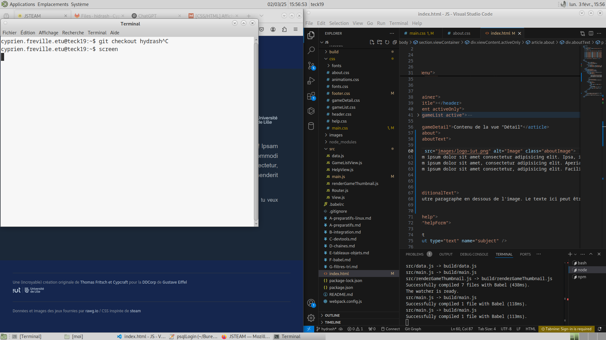

🚀 Équipe de Robotique DD CORP – FIRST LEGO League
Qui sommes-nous ?
Nous sommes DD Corp, une équipe de robotique du Lycée Gustave Eiffel Armentières, passionnée par l'innovation et la technologie. Nous participons à la FIRST LEGO League (FLL), une compétition où nous concevons et programmons des robots SPIKE Prime pour relever des défis passionnants !
🤖 La FIRST LEGO League, c'est quoi ?
La FLL est une compétition mondiale qui encourage les jeunes à explorer les sciences, la technologie, l'ingénierie et les mathématiques (STEM) à travers des défis basés sur des missions robotiques et un projet d'innovation. Chaque année, un nouveau thème nous pousse à trouver des solutions créatives à des problèmes réels.
🏆 Nos défis
🔹 Concevoir et programmer un robot LEGO pour accomplir des missions sur un tapis de jeu.
🔹 Développer un projet d'innovation en lien avec le thème de l'année.
🔹 Travailler en équipe et respecter les valeurs fondamentales de la FLL : découverte, innovation, inclusion et fun !
👥 Notre équipe
Nous sommes un groupe d'élèves aux compétences variées :
🔹 Basile, Guillaume, Lucas, Janna, Soan, Florentin, Louis
🔹 Chez DD Corp, tout le monde travaille sur tout ! Chacun contribue à la conception, la programmation, la stratégie et la présentation. Nous apprenons ensemble, partageons nos idées et nous améliorons à chaque étape du projet.
📅 Nos dates clés :
🛠 Préparation & entraînements : 7 mars et les midis
🎉 Compétition régionale FLL – 8 mars à Armentières : Rendez-vous pour présenter notre robot et notre projet face aux autres équipes !
🏆 Finale nationale (si qualifiés !) : 22 mars aux Sables-d'Olonne
📸 Suis notre aventure sur Instagram pour découvrir nos projets et nos compétitions !

Base Sous-Marine hydra'che : Une Exploration Responsable des Océans
La Base Sous-Marine hydra'che est une station d'exploration innovante, installée à 20 mètres de profondeur, conçue pour étudier les écosystèmes marins tout en minimisant son impact sur l'environnement. Ce projet unique allie science, durabilité et technologie pour mieux comprendre et protéger nos océans.
🔬 Un laboratoire sous-marin au service de la recherche
La base hydra'che est avant tout une station scientifique dédiée à l'étude des environnements marins peu profonds, où se développent des écosystèmes essentiels à la biodiversité. Ces zones côtières et récifales abritent une faune et une flore riches, mais souvent menacées par les activités humaines telles que la pollution, le changement climatique et la surpêche.
🌍 Surveillance des écosystèmes marins
Grâce à un réseau de capteurs environnementaux avancés, hydra'che collecte en continu des données sur :
Ces informations permettent aux scientifiques de mieux comprendre les impacts des activités humaines sur ces zones sensibles et d'identifier des solutions pour leur préservation.
🐠 Observation et suivi des espèces marines
À 20 mètres de profondeur, la base hydra'che est située dans un environnement riche en biodiversité. Elle permet l'étude d'espèces emblématiques telles que :
Grâce à des caméras sous-marines haute résolution et des balises de suivi, hydra'che permet d'analyser le comportement, les déplacements et les interactions de ces espèces dans leur milieu naturel.
🔎 Étude de la résilience des récifs coralliens et des herbiers marins
Les récifs coralliens et les herbiers marins jouent un rôle fondamental dans l'équilibre des océans, mais sont menacés par le blanchiment et la dégradation. La base hydra'che permet de :
Avec ces recherches, hydra'che contribue au développement de stratégies de conservation et de restauration des écosystèmes sous-marins.
🤖 L'exploration des profondeurs grâce aux drones sous-marins
Si la base hydra'che est ancrée à 20 mètres de profondeur, elle sert également de plateforme de lancement pour des drones sous-marins autonomes, capables d'explorer des zones beaucoup plus profondes et inaccessibles aux plongeurs.
🚀 Drones pour la recherche scientifique
Ces véhicules sous-marins autonomes (AUV) ou télécommandés (ROV) permettent :
🔬 Technologie et innovations
Les drones sous-marins utilisés par hydra'che intègrent des technologies avancées telles que :
🌊 Un outil clé pour la préservation des océans
En couplant les données recueillies par la base hydra'che et les drones sous-marins, les chercheurs peuvent mieux comprendre :
🏗️ Un design innovant et respectueux des océans
Conçue pour s'adapter aux conditions sous-marines, la station est faible en consommation d'énergie et intègre des matériaux résistants à la pression et à la corrosion.
💡 Un centre d'innovation technologique
Hydra'che sert également de plateforme pour tester de nouvelles technologies bio-inspirées, notamment des robots sous-marins imitant le mouvement des poissons, des revêtements inspirés du camouflage naturel ou encore des capteurs de bioluminescence.
🌊 Plongez avec nous dans une nouvelle ère de l'exploration marine !